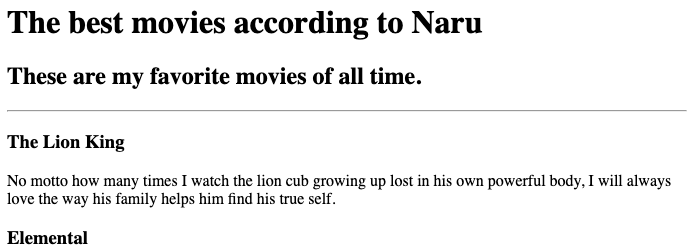

This is My Very First Web Dev Portfolio!
Here's what I've got so far:
Using my New knowldge of writing headers and texts, I've created a short list of my all-time favorite movies.
(click here or the photo below to see the project)

After I've learned how to embed images, I've created an birthday invite. You are all invited!!
(click here or the photo below to see the project)
About Me
Contact Me